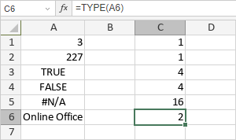

TYPE funkcija
Funkcija TYPE je jedna od informacionih funkcija. Koristi se za određivanje tipa rezultujuće ili prikazane vrednosti.
Sintaksa
TYPE(value)
Funkcija TYPE ima sledeći argument:
| Argument | Opis |
|---|---|
| value | Vrednost koja se testira. Moguće vrednosti su navedene u tabeli ispod. |
Argument value može biti jedna od sledećih vrednosti:
| Vrednost | Rezultat |
|---|---|
| broj | 1 |
| tekst | 2 |
| logička vrednost | 4 |
| vrednost greške | 16 |
| niz | 64 |
Napomene
Kako primeniti funkciju TYPE.
Primeri
Slika ispod prikazuje rezultat koji vraća funkcija TYPE.
